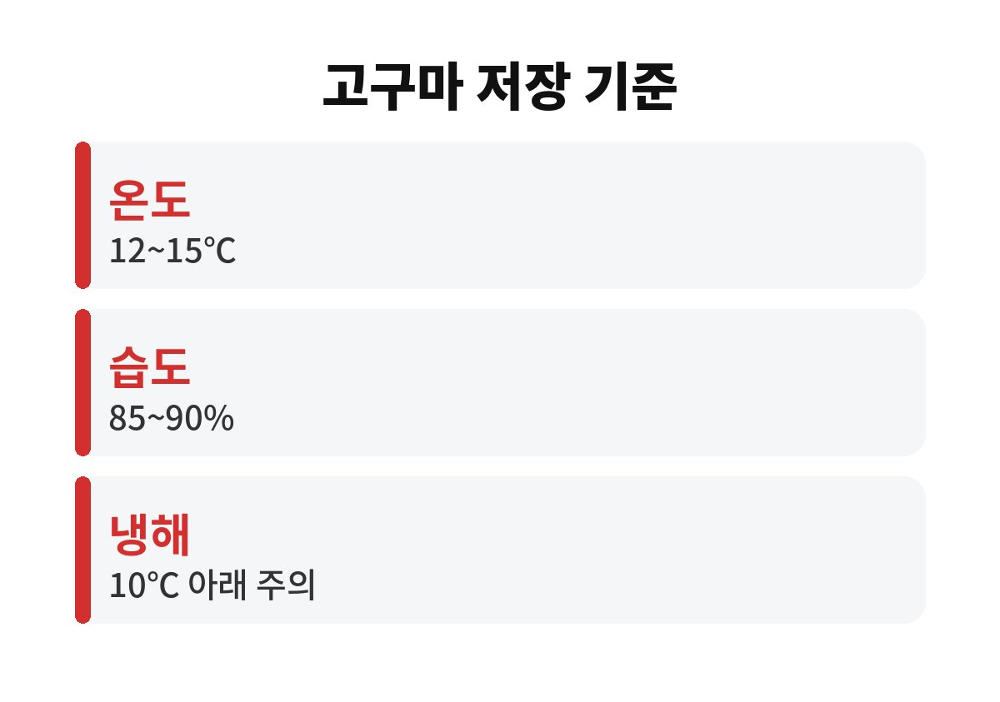

고구마 보관은 냉장고보다 12~15℃ 정도의 서늘한 실내가 맞고, 이 온도를 지키면 겨울 내내 무르지 않게 둘 수 있다.
고구마는 추위에 약한 뿌리채소라 차갑게 둘수록 오래간다는 상식이 그대로 통하지 않는다.
상자째 사 온 고구마가 2주 만에 끝부분부터 검게 변했다면 온도부터 의심해 볼 만하다.
농촌진흥청은 고구마를 10℃ 아래에 오래 두면 냉해를 입는다고 안내한다.
냉장실은 보통 0~5℃라 고구마에게는 지나치게 차갑다.
냉해를 입은 고구마는 겉은 멀쩡해 보여도 속이 검게 변하거나 심이 딱딱해지고, 꺼낸 뒤 오히려 빨리 썩는다.
늦가을 베란다는 낮에는 괜찮아도 밤 기온이 영하 가까이 떨어진다.
창가 바닥 쪽은 거실보다 훨씬 차가워 하룻밤 한파에도 냉해를 입을 수 있다.
베란다에 둘 때는 온도계를 같이 두고, 밤사이 10℃ 밑으로 내려가는 날이 오면 실내로 옮긴다.
흙 묻은 고구마를 씻으면 껍질에 생긴 작은 상처로 물기가 스며든다.
그 자리에서 곰팡이와 무름이 시작되기 쉽다.
흙은 털어 내는 정도로만 두고 먹기 직전에 씻으면 된다.
농촌진흥청 농사로에 실린 고구마 저장 기준은 온도 12~15℃, 습도 85~90%다.
15℃보다 따뜻한 곳에 두면 싹이 트고 수분이 빠져 쭈글쭈글해진다.
집 안에서 이 숫자를 정확히 맞추기는 어렵다.
그래서 난방이 직접 닿지 않는 현관 안쪽, 북쪽 방, 주방 하부장처럼 한겨울에도 얼지 않고 덥지도 않은 자리를 고르는 쪽이 현실적이다.
아파트라면 현관 신발장 옆이나 보일러를 돌리지 않는 작은 방이 후보가 된다.
같은 집이라도 바닥과 선반 위는 온도가 몇 도씩 차이 나니 온도계를 고구마 높이에 맞춰 두고 잰다.
| 구분 | 기준 | 벗어나면 생기는 일 |
|---|---|---|
| 온도 | 12~15℃ | 10℃ 아래는 냉해, 15℃ 위는 싹 |
| 습도 | 85~90% | 마르면 쭈글쭈글, 물기 맺히면 무름 |
| 장소 | 햇빛·난방 피한 실내 | 창가·보일러 옆은 온도 변화가 큼 |
| 상태 | 흙만 털고 상처 없는 것 | 상처 난 것부터 썩어 옆으로 번짐 |

비닐봉지에 묶어 두면 고구마에서 나온 습기가 안에 맺혀 무름이 빨라진다.
택배 상자 그대로 두는 고구마 보관도 가능하다.
다만 아래층 고구마가 눌려 상처가 나기 쉬워 한 번은 옮겨 담는 편이 낫다고 본다.
농가에서는 캐낸 고구마를 바로 창고에 넣지 않고 큐어링이라는 과정을 먼저 거친다.
농촌진흥청 안내로는 온도 30~33℃, 습도 90~95%에서 4일 안팎 두어 캐면서 생긴 상처에 얇은 보호층이 생기게 하는 방법이다.
이 과정을 거친 고구마는 상처로 균이 들어가는 일이 줄어 저장 기간이 길어진다.
집에서 이 온도와 습도를 맞추기는 사실상 어렵다.
그래서 가정의 고구마 보관은 새로 상처를 내지 않는 쪽에 힘을 싣는 편이 맞다.
상자를 쏟아붓듯 옮기거나 고구마끼리 부딪치게 담으면 껍질이 벗겨지고, 그 자리가 가장 먼저 물러진다.
며칠 배송을 거친 상자 안은 습기가 차 있는 경우가 많다.
상자 바닥이 눅눅하다면 고구마를 꺼내 신문지 위에 반나절 펼쳐 겉 물기를 날린 뒤 다시 담는다.
산지에서 큐어링을 했다는 안내가 있어도 운송 중 생긴 상처까지 막아 주지는 못한다.
이미 냉장고에 며칠 들어갔던 고구마는 다시 상온으로 꺼내도 저장성이 돌아오지 않는다.
이런 고구마는 오래 두지 말고 빨리 익혀 먹는다.
익힌 고구마는 식힌 뒤 냉장하거나 한 번 먹을 양씩 나눠 냉동해 두면 된다.
냉동할 때는 껍질째 하나씩 랩으로 싸서 지퍼백에 넣고 날짜를 적어 둔다.
먹을 때는 냉장실에서 천천히 녹이거나 전자레인지로 데우면 된다.
끝부분만 살짝 무른 정도라면 그 부분을 넉넉히 잘라 낸다.
단면에 검은 얼룩이 속까지 번져 있거나 쓴맛과 이상한 냄새가 나면 아까워도 버린다.
싹이 조금 난 것은 싹과 주변을 도려내면 된다.
싹이 길게 자랄 때까지 둔 고구마는 속이 퍼석해져 맛이 떨어진다.
이번 주에 할 일은 고구마를 둘 자리에 온도계를 하루 놓아 두고 밤사이 몇 도까지 내려가는지 보는 것이다.
그 숫자가 10℃ 아래라면 자리를 옮기고, 20℃를 넘는다면 더 서늘한 곳을 찾으면 된다.
한 해 먹을 양을 들여 오래 보관해야 한다면 지역 농업기술센터의 저장 안내를 함께 보는 편이 빠르다.
참고 자료: 농촌진흥청 농사로 「고구마 저장 관리」(2026년 11월 확인)
※ 2026년 기준 공공기관 안내를 바탕으로 정리한 글이며, 집 구조와 제품에 따라 결과가 다를 수 있어 제품 설명서를 함께 확인하길 바란다.